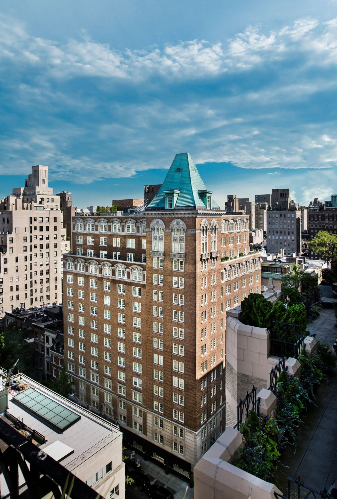
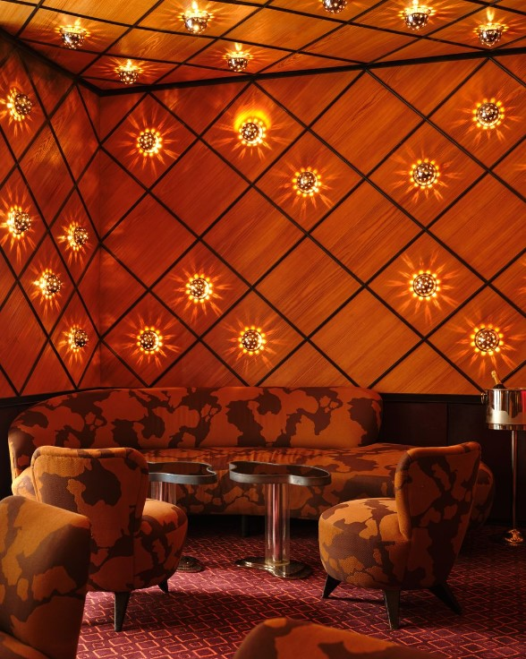
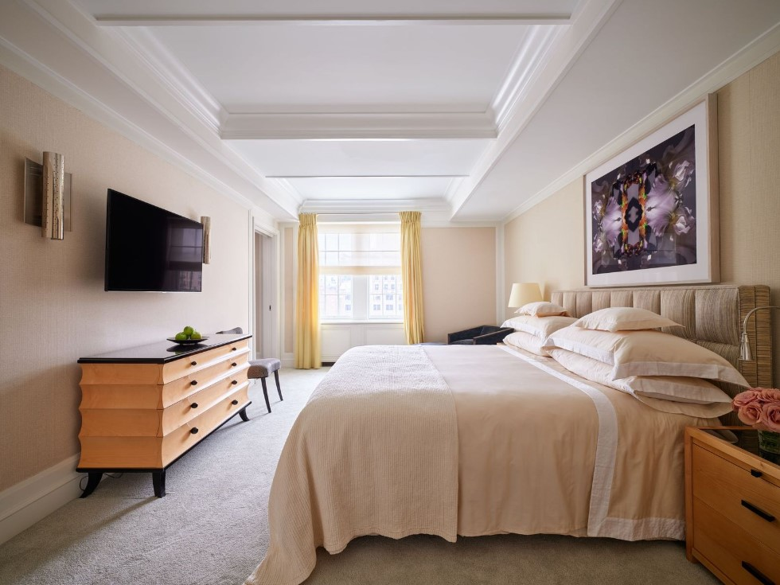
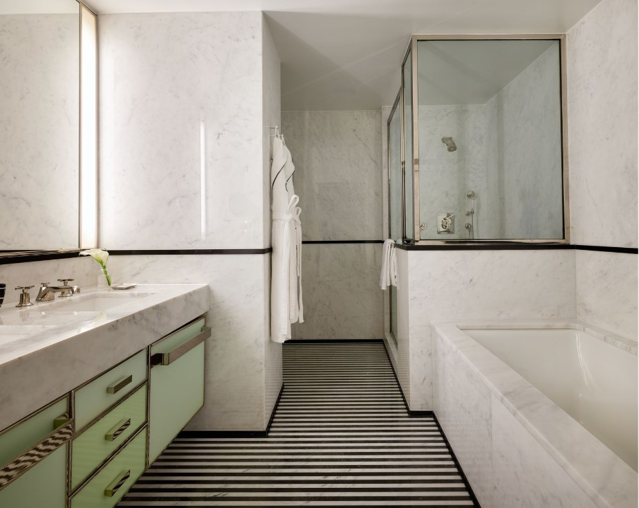
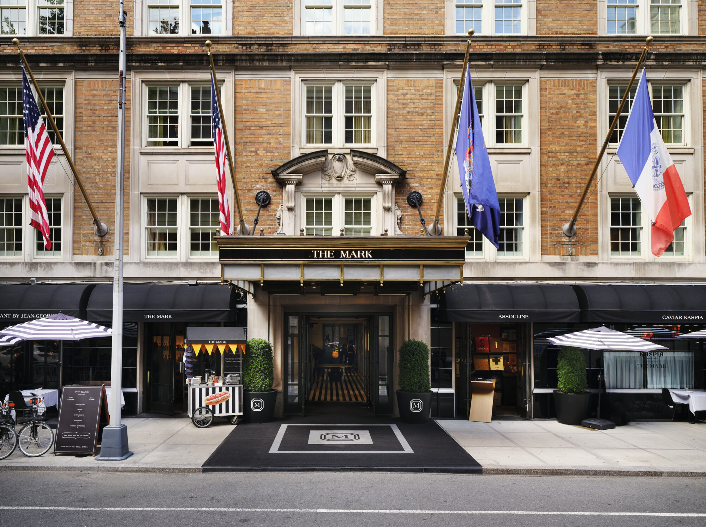

Property Guide
The Mark is for clients who want New York to feel chic, private, and very Upper East Side.
The Mark has a very specific vibe, and that is why people love it. It is not trying to be a big flashy Midtown hotel. It feels more residential, more fashion-adjacent, and more plugged into that polished Upper East Side world. If someone wants a New York hotel that feels stylish the entire time, this is a very strong option.
What makes it unique
The Mark makes Manhattan feel less like a hotel stay and more like having the right Upper East Side address.
That is the real difference here. The Mark feels plugged into a specific world: fashion, art, polished families, and clients who want New York to feel private and chic instead of overly corporate. It is stylish without trying too hard, and that residential polish is exactly why certain clients keep coming back.
Best For
Upper East Side style
Best for clients who want New York to feel private, fashionable, and very neighborhood-specific.
Known For
Suites and scene
The suite program is deep and the Jean-Georges dining keeps the hotel feeling social.
Stay
152 rooms
Strong starting room sizes and one of the most notable penthouse products in the city.
Client Type
Fashion and lifestyle travelers
Great for clients who care about privacy, aesthetics, and a more insider version of Manhattan.



The overall setup
The Mark’s own careers profile lists the hotel at 152 rooms, and what really stands out is how strong the room and suite mix is. The property leans hard into spacious accommodations, and even the starting room categories are bigger than a lot of New York hotels.
Room sizes and suite types
Standard guest rooms run around 400 to 500 square feet, which is already solid for Manhattan. Then the suite lineup gets deeper very quickly.
- Courtyard Junior Suite: about 700 square feet
- Seventy-Seven Junior Suite: about 800 square feet
- Manhattan Suite: about 855 square feet
- Garden Suite: about 890 square feet
- Premier Suite: about 1,000 square feet
- Two-Bedroom Premier Suite: about 1,640 square feet
- Signature Four-Bedroom: about 3,300 square feet
- The Mark Penthouse: 10,000 square feet


Restaurants and bars
Dining is a real part of the hotel’s identity here. You have The Mark Restaurant and The Mark Bar by Jean-Georges, which keeps the whole place feeling social and polished, and then you also have Caviar Kaspia at The Mark if the client wants something a little more scene-driven. In-room dining by Jean-Georges is also available 24/7, which matters for clients who really use the hotel as a home base.
Who it is best for
- Fashion, design, and art-forward clients
- Upper East Side lovers who want to be near Madison and the park
- Longer stays that benefit from bigger suites and residential layouts
- High-profile travelers who want privacy but still want the hotel to feel cool
My honest take
The Mark is less about a classic tourist New York stay and more about a certain lifestyle version of the city. If the client wants something sleek, social, and really well located on the Upper East Side, this is one of the strongest picks.